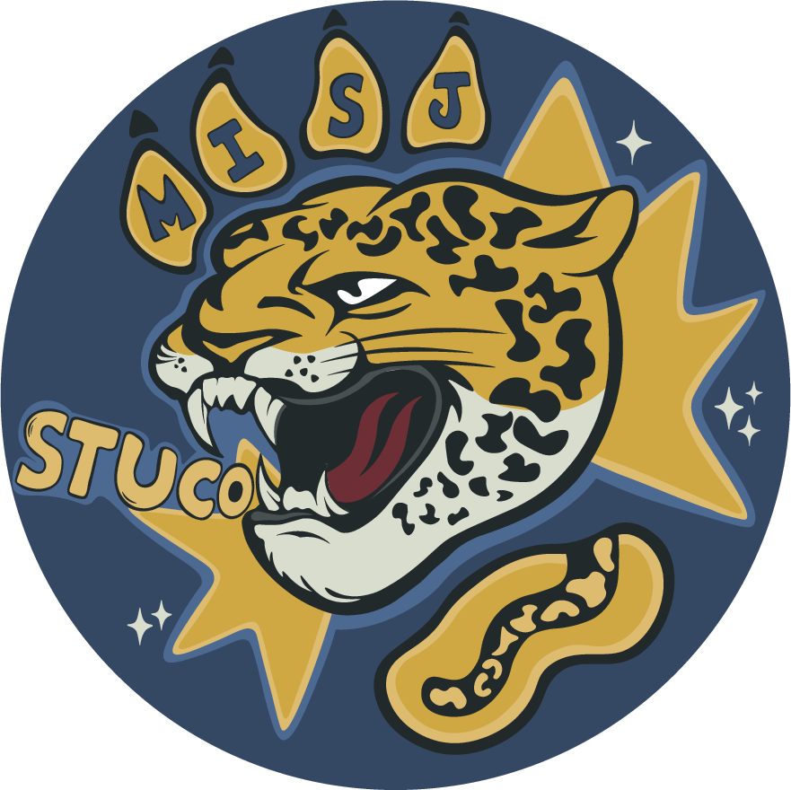

MISJ StuCo · Library
Lost &
Found.
Lost something? These are the items handed in to the library. Spot yours, then come and collect it.
Checking your account…

MISJ StuCo · Library
Lost something? These are the items handed in to the library. Spot yours, then come and collect it.
Checking your account…